상황이 구분되는 그림과 깨끗한 캐릭터
각 상황은 별도로 제작한 그림입니다. 캐릭터와 소품도 개별 파일로 분리해 옆 그림 조각이 보이지 않게 했습니다.
수정 웹앱 열기
상황별 카드 6개
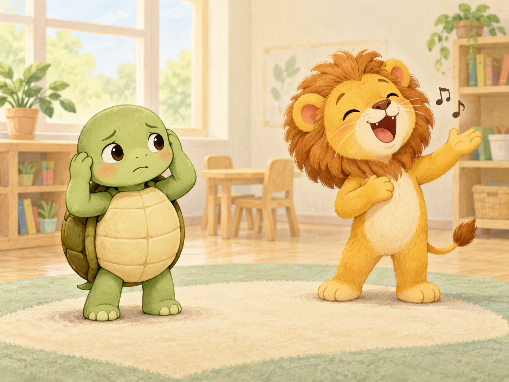
소리가 커서 불편할 때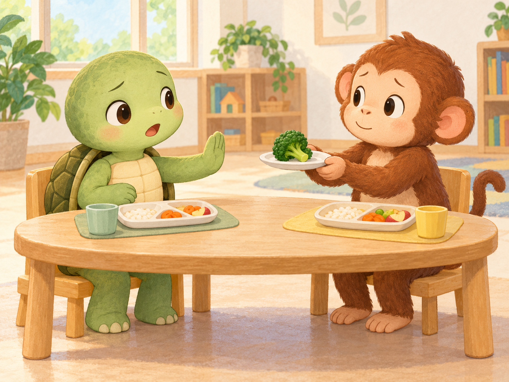
먹기 싫은 음식이 있을 때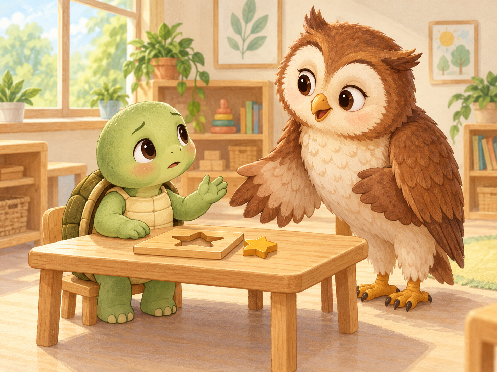
어렵거나 모를 때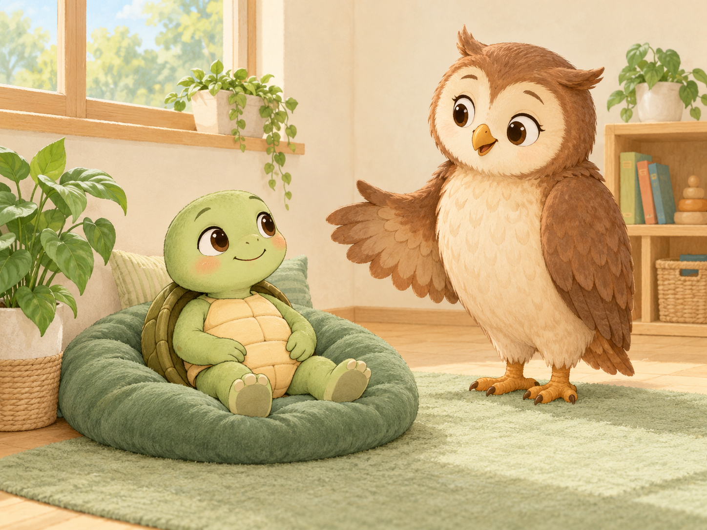
쉬고 싶을 때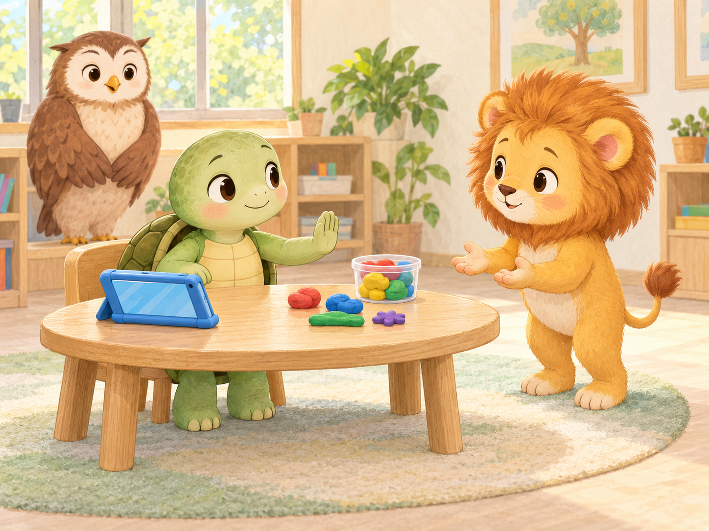
내 물건을 지킬 때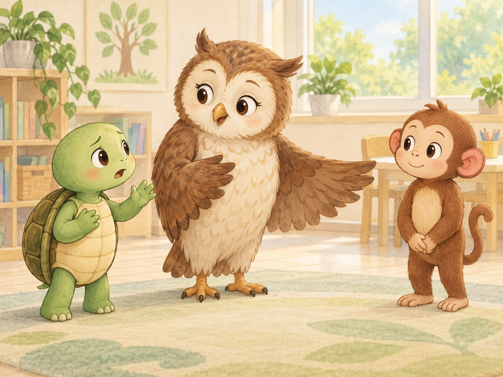
어른에게 도움을 요청할 때주인공 자세
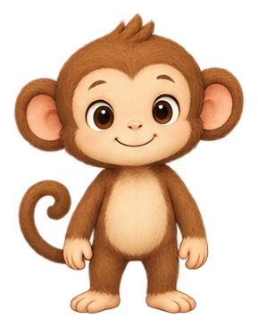
몽 · 기본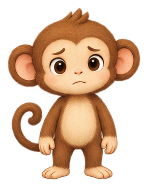
몽 · 불편함 몽 · 팔 X몽 · 손 들기루루 · 기본루루 · 불편함
몽 · 팔 X몽 · 손 들기루루 · 기본루루 · 불편함 루루 · 팔 X루루 · 손 들기
루루 · 팔 X루루 · 손 들기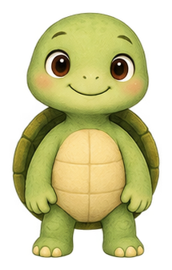
부기 · 기본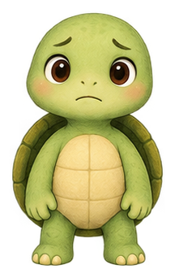
부기 · 불편함 부기 · 팔 X
부기 · 팔 X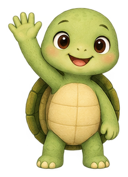
부기 · 손 들기친구와 선생님
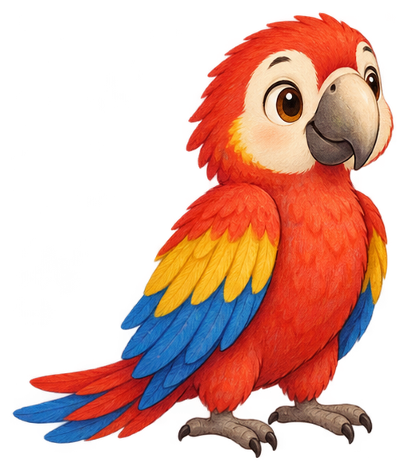
삐삐 · 듣기삐삐 · 말하기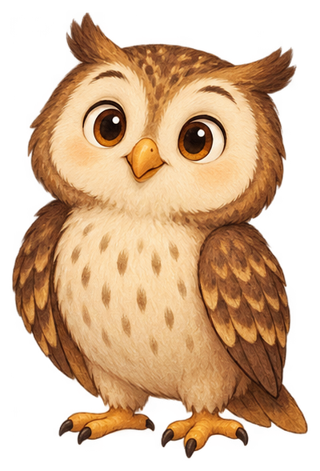
부엉이 선생님 · 듣기부엉이 선생님 · 말하기상황별 생성 프롬프트는 images/scenes/prompts.md에 보관했습니다. 그림은 설명을 돕는 예시이며 학생에게 특정 동작을 강요하는 조건이 아닙니다.